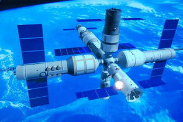
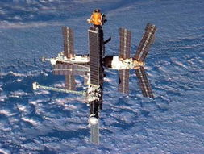
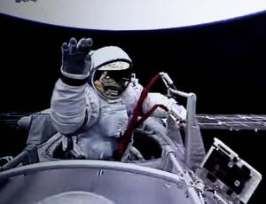
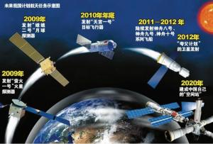

相关图片
-

- 
- 
中国进行载人航天研究的历史可以追溯到20世纪70年代初。在中国第一颗人造地球卫星东方红一号上天之后，当时的国防部五院院长钱学森就提出，中国要搞载人航天。国家当时将这个项目命名为“714工程”（即于1971年4月提出），并将飞船命名为“曙光一号”。然而，中国在开展了一段时间的工作之后，认为无论是在研制队伍、经验方面，还是在综合国力、工业基础方面搞载人航天都存在一定的困难，这个项目就搁到了一边。

20世纪70年代初，中国第一颗人造地球卫星东方红一号上天之后，开始了东方红二号、东方红二号甲、东方红三号等多颗通信卫星的研制工作。
进入80年代后，中国的空间技术取得了长足的发展，具备了返回式卫星、气象卫星、资源卫星、通信卫星等各种应用卫星的研制和发射能力。特别是1975年，中国成功地发射并回收了第一颗返回式卫星，使中国成为世界上继美国和前苏联之后第三个掌握了卫星回收技术的国家，这为中国开展载人航天技术的研究打下了坚实的基础。
1992年1月，中国政府批准载人航天工程正式上马，并命名为“921工程”。在“921工程”的七大系统中，核心是载人飞船，载人飞船则由中国空间技术研究院为主来进行研制。“921工程”正式上马时中央就提出了“争8保9”的奋斗目标， 即1998年要在技术上有一个大的突破，1999年要争取飞船上天。中国唐家岭航天城，为中国的载人航天工程完成载人航天的任务做了物质条件的保证。
1999年11月20日，中国第一艘无人试验飞船“神舟”一号飞船在酒泉起飞，21小时后在内蒙古中部回收场成功着陆，圆满完成“处女之行”。这次飞行成功为中国载人飞船上天打下非常坚实的基础。2001年1月10日，中国在酒泉卫星发射中心成功发射了“神舟”二号飞船。2002年3月25日，中国在酒泉卫星发射中心成功发射了“神舟”三号飞船。2002年12月30日，中国在酒泉卫星发射中心成功发射“神舟”四号无人飞船。
2003年10月15日9时整，我国自行研制的“神舟”五号载人飞船在中国酒泉卫星发射中心发射升空。9时9分50秒，“神舟”五号准确进入预定轨道。这是中国首次进行载人航天飞行。乘坐“神舟”五号载人飞船执行任务的航天员是38岁的杨利伟。他是我国自己培养的第一代航天员。在太空中围绕地球飞行14圈，经过21小时23分、60万公里的安全飞行后，他于16日6时23分在内蒙古主着陆场成功着陆返回。
（2005年10月12至17日，我国成功进行了第二次载人航天飞行，也是第一次将我国两名航天员费俊龙、聂海胜同时送上太空。10月12日9时零分零秒，发射神六飞船的长征二号F型运载火箭点火。火箭在点火4秒钟后升空，轰鸣声回荡在戈壁滩上空。这是长征火箭第88次发射。它是中国第二艘搭载太空人的飞船，也是中国第一艘执行“多人多天”任务的载人飞船。
2008年9月25日，我国第三艘载人飞船神舟七号成功发射，三名航天员翟志刚、刘伯明、景海鹏顺利升空。 27日，翟志刚身着我国研制的“飞天”舱外航天服，在身着俄罗斯“海鹰”舱外航天服的刘伯明的辅助下，进行了19分35秒的出舱活动。中国随之成为世界上第三个掌握空间出舱活动技术的国家。
2008年9月28日傍晚时分，神舟七号飞船在顺利完成空间出舱活动和一系列空间科学试验任务后，成功降落在内蒙古中部阿木古朗草原上。神舟七号飞船共计飞行2天20小时27分钟。从神舟七号开始，我国进入载人航天二期工程。在这一阶段里，将陆续实现航天员出舱行走、空间交会对接等科学目标。整个二期工程的所有发射任务全部由长二F火箭担任。后续任务将要突破空间交会对接关键技术，解决有一定规模、短期有人照料的空间应用问题，为实施“第三步”战略任务做准备。主要目标就是要突破载人飞船和空间飞行器的交会对接技术，研制和发射8吨级规模的空间实验室，逐步掌握空间站技术。
（因此，要实现“三步走”发展战略，还有许多关键技术需要突破，包括突破载人飞船和空间飞行器的交会对接技术，研制和发射空间实验室，解决有一定规模的、短期有人照料的空间应用问题；建造空间站，解决有较大规模的、长期有人照料的空间应用问题。
神舟八号飞船，是中国神舟系列飞船的第八个。神舟八号发射升空后，与神舟九号对接，成为一座小型空间站。中国工程院院士、原“神舟”号飞船总设计师戚发轫透露，在中国的载人航天“三步走”计划中，中国最终要建设的是一个基本型空间站，它的规模不会超过现有的“和平号”或国际空间站。戚发轫院士介绍，基本型空间站大致包括一个核心舱、一架货运飞船、一架载人飞船和两个用于实验等功能的其他舱，总重量在100吨以下。其中的核心舱需长期有人驻守，能与各种实验舱、载人飞船和货运飞船对接。具备了20吨以上运载能力的火箭，才有资格发射核心舱。为此，中国在海南文昌新建继酒泉、太原、西昌之后的第四个航天发射场，主要承担地球同步轨道卫星、大质量极轨卫星、大吨位空间站和深空探测卫星等航天器的发射任务。同时，中国还将在天津新建总装场。

2012年6月16日18时37分，神舟九号飞船乘长征二号F遥九火箭，从酒泉卫星发射中心腾空而起。这是长征火箭的第165次发射，也是神舟飞船的第四次载人飞行。中国航天员景海鹏、刘旺、刘洋将第一次入住“天宫”。33岁的刘洋也成为中国第一个飞向太空的女性。神舟九号飞船与天宫一号自动对接。二者携手在太空飞行6天之后短暂分开，再进行由航天员手动控制的交会对接。
“天宫一号”实际上就是一个空间实验室的雏形，它的重量和神舟七号一样，用它来完成和飞船的交会对接。“天宫一号”主体为短粗的圆柱型，直径比神舟飞船更大，前后各有一个对接口。采用两舱构型，分别为实验舱和资源舱，实验舱由密封的前锥段、柱段和后锥段组成，实验舱前端安装一个对接机构，以及交会对接测量和通信设备，用于支持与飞船实现交会对接。资源舱为轨道机动提供动力，为飞行提供能源。2013年6月25日07时05分，神舟十号飞船与天宫一号目标飞行器分离，从天宫一号上方绕飞，顺利完成绕飞以及近距离交会任务，并且在空中授课。